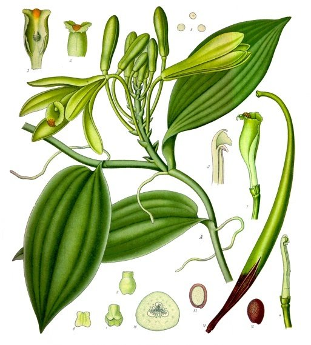
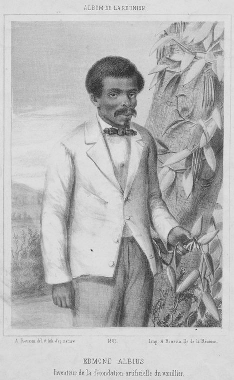

Vanilka voňavá
Vanilla planifolia · používa sa plod – struk · v mojej zbierke len ako príchuť

Vanilku pozná každý – z vanilkového cukru, pudingu aj zmrzliny. Málokto však vie, že pochádza z orchidey. Je to popínavá liana z tropických lesov Mexika a Strednej Ameriky, ktorá sa vzdušnými koreňmi šplhá po stromoch.
Tyčinka, ktorá nie je kôra
Tmavá „tyčinka“ vanilky nie je kôra ani lusk. Je to plod orchidey – botanici mu hovoria tobolka. Vnútri sú tisíce drobučkých čiernych semienok. Práve tie vidíte ako čierne bodky v dobrej vanilkovej zmrzline alebo kréme.
Zaujímavé je, že čerstvé zelené plody vôbec nevoňajú. Vôňa vzniká až pri dlhom spracovaní: plody sa sparia, nechajú „potiť“ a potom celé mesiace pomaly sušia. Až vtedy stmavnú a začnú krásne voňať.
Čierny kvet a malý struk
Slovo vanilka pochádza zo španielčiny. Španieli v Mexiku nazvali plod vainilla – „malý struk“, lebo im pripomínal struky strukovín. Aztékovia ju volali tlilxochitl. Zvyčajne sa to prekladá ako „čierny kvet“, hoci niektorí jazykovedci si myslia, že skôr „čierny struk“ – kvet vanilky totiž nie je čierny, ale zelenožltý.
Legenda o princeznej Xanat
Totonakovia, pôvodní obyvatelia Mexika z okolia mesta Papantla, rozprávajú o vanilke legendu. Princezná Xanat sa mala stať kňažkou bohyne úrody, no zaľúbila sa do obyčajného mladíka. Spolu utiekli, ale chytili ich a zahynuli. Na mieste, kde zomreli, vraj vyrástla liana vanilky – aby ich láska voňala navždy. Legenda sa rozpráva vo viacerých verziách a mená sa v nich líšia.


Chlapec, ktorý naučil svet pestovať vanilku

Keď Európania priviezli vanilku do iných tropických krajín, rastlina tam síce rástla aj kvitla, ale plody nemala. Chýbal jej drobný opeľovač, ktorý žije len v jej domovine. Kvet vanilky je pritom otvorený veľmi krátko – zvyčajne len jeden deň.
V Európe to síce už predtým dokázali botanici v skleníkoch, ale ich postup bol zložitý a na veľkú plantáž sa nehodil. Jednoduchý spôsob vymyslel v roku 1841 na ostrove Réunion v Indickom oceáne dvanásťročný chlapec Edmond, ktorý žil na plantáži ako otrok. Jeho pán mu predtým ukázal, ako sa ručne opeľujú kvety melóna – a Edmond prišiel na to, ako to urobiť aj s vanilkou: tenkou paličkou a palcom. Tento spôsob sa naučil každý za pár minút, rozšíril sa do celého sveta a vanilka sa takto opeľuje dodnes, kvet po kvete.
Udivujúce je skôr to, že na to neprišiel nikto z dospelých – ani učení botanici, ani plantážnici, ktorí na vanilke mohli zbohatnúť. Keď sa však ukázalo, aký cenný je Edmondov spôsob, jeden botanik začal tvrdiť, že na to prišiel on. Edmondov pán sa chlapca verejne zastal.
Ostrov Réunion sa kedysi volal Île Bourbon – preto sa vanilke z tejto oblasti dodnes hovorí „Bourbon vanilka“. S whisky bourbon nemá nič spoločné. A pretože práca s ňou je taká zdĺhavá, patrí vanilka medzi najdrahšie koreniny na svete – drahší je azda len šafran.
Vanilín a vanilka
Hlavná voňavá látka vanilky sa volá vanilín. Dá sa vyrobiť aj umelo, z iných surovín – a takmer všetok vanilín na svete sa dnes vyrába práve takto, nie z vanilky. Skutočná vanilka pritom obsahuje okolo 80 rôznych voňavých látok.
Rozdiel nájdete aj vo vlastnej kuchyni: vanilínový cukor je ochutený vanilínom, vanilkový cukor skutočnou vanilkou. Stačí sa pozrieť na obal.
Ako sa množí orchidea
Semená orchideí sú drobné ako prach a nemajú v sebe žiadnu zásobu potravy. V prírode vyklíčia len vtedy, keď im pomôže drobná huba v pôde. Preto sa orchidey dlho množili len veľmi ťažko a boli vzácne a drahé.
Vanilka sa na plantážach množí jednoduchšie – odrezkami: kúsok stonky sa zapichne a zakorení. Ostatné orchidey sa od druhej polovice 20. storočia množia aj „v skúmavke“: z malého kúska rastliny v živnom roztoku vyrastú nové rastlinky. Vďaka tomu dnes kúpite orchideu v každom kvetinárstve.
Orchidey na našich lúkach
Príbuzné vanilky nájdete aj u nás. Na vlhkých lúkach v máji a júni kvitne fialovo-ružový vstavačovec májový, v lesoch rastú rôzne vstavače a vzácny črievičník papučkový so žltým kvetom ako papučka.
Mnohé naše orchidey sú chránené zákonom. Obdivujte ich len očami a fotoaparátom – netrhajte ich ani nevykopávajte.
Vanilka v predstavách


Ilustrácie vytvorené pomocou umelej inteligencie.
Zdroje
- Vanilka voňavá – Wikipédia
- Edmond Albius – Wikipedia (anglicky)
- Vanilla – Wikipedia (anglicky; aj o pokusoch botanikov pred Edmondom)
- Edmond Albius – Europeana (anglicky)
- Vanilla in Mexico – New York Botanical Garden (anglicky; aj o legende)
- Voňavé látky vanilky – časopis Molecules, 2022 (anglicky)
- Litografia Edmonda Albiusa (1863) – Wikimedia Commons
- Botanická kresba: Köhler's Medizinal-Pflanzen (1897) – Wikimedia Commons

Text pripravil Claude, spolutvorca stránky. Spomienky sú autora zbierky.
Táto stránka je o čajoch, ktoré si kúpite v obchode, a o mojej zbierke ich obalov. Nie je návodom na zber rastlín.